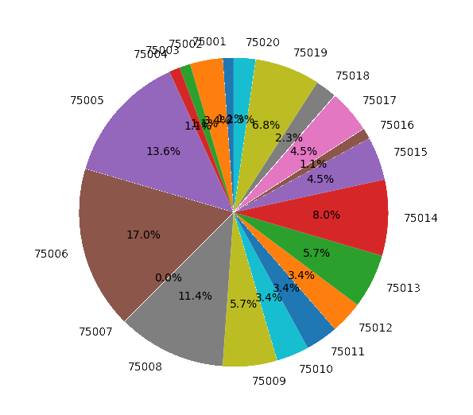

Résultats
Statistiques par arrondissement
Une fois graphe généré, nous l'observons et supposons par intuition qu'il existe peut-être des corrélations entre ces trois éléments.
Graphes

Distribution des cinémas dans les 20 arrondissements de Paris
Distribution des monuments historiques dans les 20 arrondissements de Paris
Distribution des lieux de tournage dans les 20 arrondissements de Paris
Corrélations
Script Python
Taux de corrélation
Problèmes rencontrés
1. Erreur de saisie pour les codes d’arrondissement (Par exemple, 6 chiffres au lieu de 5 pour le code postal dans le document source).
2. Pour visualiser le fichier xml avec transformation xslt, il faut une version 6xx de firefox. Les nouvelles versions de 7xx ne prennent pas en compte la feuille xsl ni le css.
3. DES DONNÉES MAL TAPÉES ! Un monument parisien du 20ème arrondissement qui porte un code_insee 20120!!! Mais comme cette donnée vient du lien API, nous ne pouvons pas la corriger.
4. Pour le fichier csv de lieu de tournage, il y a des doublons d’adresse parce qu’un lieu de tournage peut être filmé par plusieurs films ou séries, donc pour le comptage des lieus de tournage, nous avons nettoyé les données et supprimé les doublons avec set() avant de faire le comptage.
5. Il n’y a pas de cinema dans le 7ème arrondissement (quelle tristesse !), donc pour les colonnes des calcul de ratio pourcentage, nous étions obligés d’ajouter les condition ‘if cpt_cinemas[i] != 0’.
Conclusion
Contrairement à notre supposition, le nombre de cinémas, le nombre des lieux de tournage et le nombre des monuments historiques n'ont pas de corrélations remarquables d'après ce que montre le calcul de taux de corrélation s'avérant très faible. Ce qui montre que les observations ne sont pas toujours cohérentes avec les statistiques, la raison pour laquelle nous avons besoin de la data science ;).